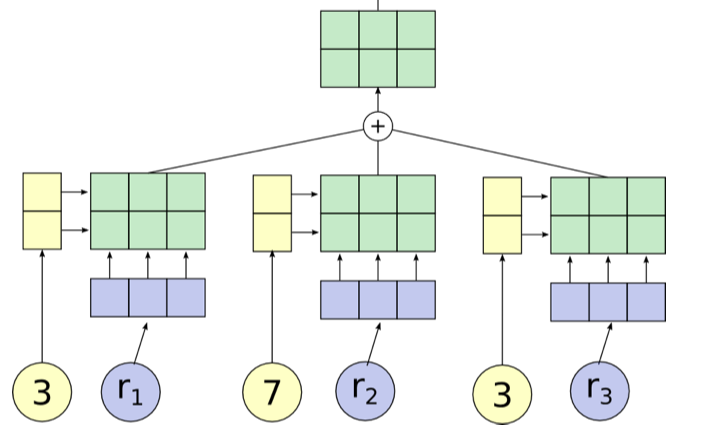

5.5. comp neuro#
5.5.1. introduction#
5.5.1.1. overview#
lacking: insight from neuro that can help build machine
scales: cortex, column, neuron, synapses
physics: theory and practice are much closer
are there principles?
“god is a hacker” - francis crick
theorists are lazy - ramon y cajal
things seemed like mush but became more clear - horace barlow
5.5.1.2. history#
ai
people: turing, von neumman, marvin minsky, mccarthy…
ai: birth at 1956 conference
vision: marvin minsky thought it would be a summer project
lighthill debate 1973 - was ai worth funding?
intelligence tends to be developed by young children
cortex grew very rapidly
cybernetics / artficial neuro nets
people: norbert weiner, mcculloch & pitts, rosenblatt
neuro
hubel & weisel (1962, 1965) simple, complex, hypercomplex cells
neocognitron fukushima (1980)
david marr: theory, representation, implementation
felleman & van essen (1991)
ascending layers (e.g. v1-> v2): goes from superficial to deep layers
descending layers (e.g. v2 -> v1): deep layers to superficial
solari & stoner (2011) “cognitive consilience” - layers thicknesses change in different parts of the brain
motor cortex has much smaller input (layer 4), since it is mostly output
5.5.1.3. types of models#
three types
descriptive brain model - encode / decode external stimuli
mechanistic brian cell / network model - simulate the behavior of a single neuron / network
interpretive (or normative) brain model - why do brain circuits operate how they do
receptive field - the things that make a neuron fire
retina has on-center / off-surround cells - stimulated by points
then, V1 has differently shaped receptive fields
efficient coding hypothesis - brain learns different combinations (e.g. lines) that can efficiently represent images
sparse coding (Olshausen and Field, 1996)
ICA (Bell and Sejnowski, 1997)
predictive coding (Rao and Ballard, 1999)
brain is trying to learn faithful and efficient representations of an animal’s natural environment
5.5.2. biophysical models#
5.5.2.1. modeling neurons#
membrane can be treated as a simple circuit, with a capacitor and resistor
nernst battery
osmosis (for each ion)
electrostatic forces (for each ion)
together these yield Nernst potential \(E = \frac{k_B T}{zq} ln \frac{[in]}{[out]}\)
T is temp
q is ionic charge
z is num charges
part of voltage is accounted for by nernst battery \(V_{rest}\)
yields \(\tau \frac{dV}{dt} = -V + V_\infty\) where \(\tau=R_mC_m=r_mc_m\)
equivalently, \(\tau_m \frac{dV}{dt} = -((V-E_L) - g_s(t)(V-E_s) r_m) + I_e R_m \)

5.5.2.2. simplified model neurons#
integrate-and-fire neuron
passive membrane (neuron charges)
when \(V = V_{thresh}\), a spike is fired
then \(V = V_{reset}\)
approximation is poor near threshold
can include threshold by saying
when \(V = V_{max}\), a spike is fired
then \(V = V_{reset}\)
modeling multiple variables
also model a K current
can capture things like resonance
theta neuron (Ermentrout and Kopell)

often used for periodically firing neurons (it fires spontaneously)
5.5.2.3. modeling dendrites / axons#
cable theory - Kelvin
voltage V is a function of both x and t

separate into sections that don’t depend on x
coupling conductances link the sections (based on area of compartments / branching)
Rall model for dendrites
if branches obey a certain branching ratio, can replace each pair of branches with a single cable segment with equivalent surface area and electrotonic length
\(d_1^{3/2} = d_{11}^{3/2} + d_{12}^{3/2}\)
dendritic computation (London and Hausser 2005)
hippocampus - when inputs arrive at soma, similiar shape no matter where they come in = synaptic scaling
where inputs enter influences how they sum
dendrites can generate spikes (usually calcium) / backpropagating spikes
ex. Jeffress model - sound localized based on timing difference between ears
ex. direction selectivity in retinal ganglion cells - if events arive at dendrite far -> close, all get to soma at same time and add
5.5.2.4. circuit-modeling basics#
membrane has capacitance \(C_m\)
force for diffusion, force for drift
can write down diffeq for this, which yields an equilibrium
\(\tau = RC\)
bigger \(\tau\) is slower
to increase capacitance
could have larger diameter \(C_m \propto D\)
axial resistance \(R_A \propto 1/D^2\) (not same as membrane leak), thus bigger axons actually charge faster
5.5.2.5. action potentials#
channel/receptor types
ionotropic: \(G_{ion}\) = f(molecules outside)
something binds and opens channel
metabotropic: \(G_{ion}\) = f(molecules inside)
doesn’t directly open a channel: indirect
others
photoreceptor
hair cell
voltage-gated (active - provide gain; might not require active ATP, other channels are all passive)
5.5.2.6. physics of computation#
drift and diffusion are at the heart of everything (based on carver mead)
Boltzmann distr. models many things (ex. distr of air molecules vs elevation. Subject to gravity and diffusion upwards since they’re colliding)
nernst potential
current-voltage relation of voltage-gated channels
current-voltage relation of MOS transistor
these things are all like a transistor: energy barrier that must be overcome
5.5.2.7. spiking neurons#
passive membrane model was leaky integrator
voltage-gaed channels were more complicated
can be though of as leaky integrate-and-fire neuron (LIF)
this charges up and then fires a spike, has refractory period, then starts charging up again
rate coding hypothesis - signal conveyed is the rate of spiking (some folks think is too simple)
spiking irregularly is largely due to noise and doesn’t convey information
some neurons (e.g. neurons in LIP) might actually just convey a rate
linear-nonlinear-poisson model (LNP) - sometimes called GLM (generalized linear model)
based on observation that variance in firing rate \(\propto\) mean firing rate
plotting mean vs variance = 1 \(\implies\) Poisson output
these led people to model firing rates as Poisson \(\frac {\lambda^n e^{-\lambda}} {n!}\)
bruno doesn’t really believe the firing is random (just an effect of other things we can’t measure)
ex. fly H1 neuron 1997
constant stimulus looks very Poisson
moving stimulus looks very Bernoulli
spike timing hypothesis
spike timing can be very precise in response to time-varying signals (mainen & sejnowski 1995; bair & koch 1996)
often see precise timing
encoding: stimulus \(\to\) spikes
decoding: spikes \(\to\) representation
encoding + decoding are related through the joint distr. over simulus and repsonse (see Bialek spikes book)
nonlinear encoding function can yield linear decoding
able to directly decode spikes using a kernel to reproduce signal (seems to say you need spikes - rates would not be good enough)
some reactions happen too fast to average spikes (e.g. 30 ms)
estimating information rate: bits (usually better than snr - can calculate between them) - usually 2-3 bits/spike
5.5.3. neural coding#
5.5.3.1. neural encoding#
defining neural code
encoding: P(response | stimulus)
tuning curve - neuron’s response (ex. firing rate) as a function of stimulus
orientation / color selective cells are distributed in organized fashion
some neurons fire to a concept, like “Pamela Anderson”
retina (simple) -> V1 (orientations) -> V4 (combinations) -> ?
also massive feedback
decoding: P(stimulus | response)
simple encoding
want P(response | stimulus)
response := firing rate r(t)
stimulus := s
simple linear model
r(t) = c * s(t)
weighted linear model - takes into account previous states weighted by f
temporal filtering
r(t) = \(f_0 \cdot s_0 + ... + f_t \cdot s_t = \sum s_{t-k} f_k\) where f weights stimulus over time
could also make this an integral, yielding a convolution:
r(t) = \(\int_{-\infty}^t d\tau \: s(t-\tau) f(\tau)\)
a linear system can be thought of as a system that searches for portions of the signal that resemble its filter f
leaky integrator - sums its inputs with f decaying exponentially into the past
flaws
no negative firing rates
no extremely high firing rates
can add a nonlinear function g of the linear sum can fix this
r(t) = \(g(\int_{-\infty}^t d\tau \: s(t-\tau) f(\tau))\)
spatial filtering
r(x,y) = \(\sum_{x',y'} s_{x-x',y-y'} f_{x',y'}\) where f again is spatial weights that represent the spatial field
could also write this as a convolution
for a retinal center surround cell, f is positive for small \(\Delta x\) and then negative for large \(\Delta x\)
can be calculated as a narrow, large positive Gaussian + spread out negative Gaussian
can combine above to make spatiotemporal filtering
filtering = convolution = projection
feature selection
P(response|stimulus) is very hard to get
stimulus can be high-dimensional (e.g. video)
stimulus can take on many values
need to keep track of stimulus over time
solution: sample P(response|s) to many stimuli to characterize what in input triggers responses
find vector f that captures features that lead to spike
dimensionality reduction - ex. discretize
value at each time \(t_i\) is new dimension
commonly use Gaussian white noise
time step sets cutoff of highest frequency present
prior distribution - distribution of stimulus
multivariate Gaussian - Gaussian in any dimension, or any linear combination of dimensions
look at where spike-triggering points are and calculate spike-triggered average f of features that led to spike
use this f as filter
determining the nonlinear input/output function g
replace stimulus in P(spike|stimulus) with P(spike|\(s_1\)), where s1 is our filtered stimulus
use bayes rule \(g=P(spike\|s_1)=\frac{P(s_1\|spike)P(spike)}{P(s_1)}\)
if \(P(s_1\|spike) \approx P(s_1)\) then response doesn’t seem to have to do with stimulus
incorporating many features \(f_1,...,f_n\)
here, each \(f_i\) is a vector of weights
\(r(t) = g(f_1\cdot s,f_2 \cdot s,...,f_n \cdot s)\)
could use PCA - discovers low-dimensional structure in high-dimensional data
each f represents a feature (maybe a curve over time) that fires the neuron
variability
hidden assumptions about time-varying firing rate and single spikes
smooth function RFT can miss some stimuli
statistics of stimulus can effect P(spike|stimulus)
Gaussian white noise is nice because no way to filter it to get structure
identifying good filter
want \(P(s_f\|spike)\) to differ from \(P(s_f)\) where \(s_f\) is calculated via the filter
instead of PCA, could look for f that directly maximizes this difference (Sharpee & Bialek, 2004)
Kullback-Leibler divergence - calculates difference between 2 distributions
\(D_{KL}(P(s),Q(s)) = \int ds P(s) log_2 P(s) / Q(s)\)
maximizing KL divergence is equivalent to maximizing mutual info between spike and stimulus
this is because we are looking for most informative feature
this technique doesn’t require that our stimulus is white noise, so can use natural stimuli
maximization isn’t guaranteed to uniquely converge
modeling the noise
need to go from r(t) -> spike times
divide time T into n bins with p = probability of firing per bin
over some chunk T, number of spikes follows binomial distribution (n, p)
if n gets very large, binomial approximates Poisson
\(\lambda\) = spikes in some set time (mean = \(\lambda\), var = \(\lambda\))
can test if distr is Poisson with Fano factor=mean/var=1
interspike intervals have exponential distribution - if fires a lot, this can be bad assumption (due to refractory period)
generalized linear model adds explicit spike-generation / post-spike filter (Pillow et al. 2008)
\(P(\text{spike at }t)\sim\exp((f_1*s + h_1*r)) \)
post-spike filter models refractory period
Paninski showed that using exponential nonlinearity allows this to be optimized
could add in firing of other neurons
time-rescaling theorem - tests how well we have captured influences on spiking (Brown et al 2001)
scaled ISIs (\(t_{i-1}-t_i\)) r(t) should be exponential
5.5.3.2. neural decoding#
neural decoding and signal detection
decoding: P(stimulus | response) - ex. you hear noise and want to tell what it is
here \(r\) = response = firing rate
monkey is trained to move eyes in same direction as dot pattern (Britten et al. 92)
when dots all move in same direction (100% coherence), easy
neuron recorded in MT - tracks dots
count firing rate when monkey tracks in right direction
count firing rate when monkey tracks in wrong direction
as coherence decreases, these firing rates blur
need to get P(+ or - | r)
can set a threshold on r by maximizing likelihood
P(r|+) and P(r|-) are likelihoods
Neyman-Pearson lemma - likelihood ratio test is the most efficient statistic, in that is has the most power for a given size
\(\frac{p(r\|+)}{p(r\|-)} > 1?\)
accumulated evidence - we can accumulate evidence over time by multiplying these probabilities
instead we take sum the logs, and compare to 0
\(\sum_i ln \frac{p(r_i\|+)}{p(r_i\|-)} > 0?\)
once we hit some threshold for this sum, we can make a decision + or -
experimental evidence (Kiani, Hanks, & Shadlen, Nat. Neurosci 2006)
monkey is making decision about whether dots are moving left/right
neuron firing rates increase over time, representing integrated evidence
neuron always seems to stop at same firing rate
priors - ex. tiger is much less likely then breeze
scale P(+|r) by prior P(+)
neuroscience ex. photoreceptor cells P(noise|r) is much larger than P(signal|r)
therefore threshold on r is high to minimize total mistakes
cost of acting/not acting
loss for predicting + when it is -: \(L_- \cdot P[+\|r]\)
loss for predicting - when it is +: \(L_+ \cdot P[-\|r]\)
cut your losses: answer + when average Loss\(_+\) < Loss\(_-\)
i.e. \(L_+ \cdot P[-\|r]\) < \(L_- \cdot P[+\|r]\)
rewriting with Baye’s rule yields new test:
\(\frac{p(r\|+)}{p(r\|-)}> L_+ \cdot P[-] / L_- \cdot P[+]\)
here the loss term replaces the 1 in the Neyman-Pearson lemma
population coding and bayesian estimation
population vector - sums vectors for cells that point in different directions weighted by their firing rates
ex. cricket cercal cells sense wind in different directions
since neuron can’t have negative firing rate, need overcomplete basis so that can record wind in both directions along an axis
can do the same thing for direction of arm movement in a neural prosthesis
not general - some neurons aren’t tuned, are noisier
not optimal - making use of all information in the stimulus/response distributions
bayesian inference
\(p(s\|r) = \frac{p(r\|s)p(s)}{p( r)}\)
maximum likelihood: s* which maximizes p(r|s)
MAP = maximum a posteriori: s* which mazimizes p(s|r)
simple continuous stimulus example
setup
s - orientation of an edge
each neuron’s average firing rate=tuning curve \(f_a(s)\) is Gaussian (in s)
let \(r_a\) be number of spikes for neuron a
assume receptive fields of neurons span s: \(\sum r_a (s)\) is const

solving
maximizing log-likelihood with respect to s -
take derivative and set to 0
soln \(s^* = \frac{\sum r_a s_a / \sigma_a^2}{\sum r_a / \sigma_a^2}\)
if all the \(\sigma\) are same, \(s^* = \frac{\sum r_a s_a}{\sum r_a}\)
this is the population vector
maximum a posteriori
\(ln \: p(s\|r) = ln \: P(r\|s) + ln \: p(s) = ln \: P(r )\)
\(s^* = \frac{T \sum r_a s_a / \sigma^2_a + s_{prior} / \sigma^2_{prior}}{T \sum r_a / \sigma^2_a + 1/\sigma^2_{prior}}\)
this takes into account the prior
narrow prior makes it matter more
doesn’t incorporate correlations in the population
stimulus reconstruction
decoding s -> \(s^*\)
want an estimator \(s_{Bayes}=s_B\) given some response r
error function \(L(s,s_{B})=(s-s_{B})^2\)
minimize \(\int ds \: L(s,s_{B}) \: p(s\|r)\) by taking derivative with respect to \(s_B\)
\(s_B = \int ds \: p(s\|r) \: s\) - the conditional mean (spike-triggered average)
add in spike-triggered average at each spike
if spike-triggered average looks exponential, can never have smooth downwards stimulus
could use 2 neurons (like in H1) and replay the second with negative sign
LGN neurons can reconstruct a video, but with noise
recreated 1 sec long movies - (Jack Gallant - Nishimoto et al. 2011, Current Biology)
voxel-based encoding model samples ton of prior clips and predicts signal
get p(r|s)
pick best p(r|s) by comparing predicted signal to actual signal
input is filtered to extract certain features
filtered again to account for slow timescale of BOLD signal
decoding
maximize p(s|r) by maximizing p(r|s) p(s), and assume p(s) uniform
30 signals that have highest match to predicted signal are averaged
yields pretty good pictures
5.5.3.3. information theory#
information and entropy
surprise for seeing a spike h(p) = \(-log_2 (p)\)
entropy = average information
code might not align spikes with what we are encoding
how much of the variability in r is encoding s
define q as en error
\(P(r_+\|s=+)=1-q\)
\(P(r_-\|s=+)=q\)
similar for when s=-
total entropy: \(H(R ) = - P(r_+) log P(r_+) - P(r_-)log P(r_-)\)
noise entropy: \(H(R\|S=+) = -q log q - (1-q) log (1-q)\)
mutual info I(S;R) = \(H(R ) - H(R\|S) \) = total entropy - average noise entropy
= \(D_{KL} (P(R,S), P(R )P(S))\)
grandma’s famous mutual info recipe
for each s
P(R|s) - take one stimulus and repeat many times (or run for a long time)
H(R|s) - noise entropy
\(H(R\|S)=\sum_s P(s) H(R\|s)\)
\(H(R ) \) calculated using \(P(R ) = \sum_s P(s) P(R\|s)\)
info in spike trains
information in spike patterns
divide pattern into time bins of 0 (no spike) and 1 (spike)
binary words w with letter size \(\Delta t\), length T (Reinagel & Reid 2000)
can create histogram of each word
can calculate entropy of word
look at distribution of words for just one stimulus
distribution should be narrower
calculate \(H_{noise}\) - average over time with random stimuli and calculate entropy
varied parameters of word: length of bin (dt) and length of word (T)
there’s some limit to dt at which information stops increasing
this represents temporal resolution at which jitter doesn’t stop response from identifying info about the stimulus
corrections for finite sample size (Panzeri, Nemenman,…)
information in single spikes - how much info does single spike tell us about stimulus
don’t have to know encoding, mutual info doesn’t care
calculate entropy for random stimulus - \(p=\bar{r} \Delta t\) where \(\bar{r}\) is the mean firing rate
calculate entropy for specific stimulus
let \(P(r=1\|s) = r(t) \Delta t\)
let \(P(r=0\|s) = 1 - r(t) \Delta t\)
get r(t) by having simulus on for long time
ergodicity - a time average is equivalent to averging over the s ensemble
info per spike \(I(r,s) = \frac{1}{T} \int_0^T dt \frac{r(t)}{\bar{r}} log \frac{r(t)}{\bar{r}}\)
timing precision reduces r(t)
low mean spike rate -> high info per spike
ex. rat runs through place field and only fires when it’s in place field
spikes can be sharper, more / less frequent
coding principles
natural stimuli
huge dynamic range - variations over many orders of magnitude (ex. brightness)
power law scaling - structure at many scales (ex. far away things)
efficient coding - in order to have maximum entropy output, a good encoder should match its outputs to the distribution of its inputs
want to use each of our “symbols” (ex. different firing rates) equally often
should assign equal areas of input stimulus PDF to each symbol
adaptation to stimulus statistics

feature adaptation (Atick and Redlich)
spatial filtering properties in retina / LGN change with varying light levels
at low light levels surround becomes weaker
coding sechemes
redundancy reduction
population code \(P(R_1,R_2)\)
entropy \(H(R_1,R_2) \leq H(R_1) + H(R_2)\) - being independent would maximize entropy
correlations can be good
error correction and robust coding
correlations can help discrimination
retina neurons are redundant (Berry, Chichilnisky)
more recently, sparse coding
penalize weights of basis functions
instead, we get localized features
we ignored the behavioral feedback loop
5.5.4. computing with networks#
5.5.4.1. modeling connections between neurons#
model effects of synapse by using synaptic conductance \(g_s\) with reversal potential \(E_s\)
\(g_s = g_{s,max} \cdot P_{rel} \cdot P_s\)
\(P_{rel}\) - probability of release given an input spike
\(P_s\) - probability of postsynaptic channel opening = fraction of channels opened
basic synapse model
assume \(P_{rel}=1\)
model \(P_s\) with kinetic model
open based on \(\alpha_s\)
close based on \(\beta_s\)
yields \(\frac{dP_s}{dt} = \alpha_s (1-P_s) - \beta_s P_s\)
3 synapse types
AMPA - well-fit by exponential
GAMA - fit by “alpha” function - has some delay
NMDA - fit by “alpha” function - has some delay
linear filter model of a synapse
pick filter (ex. K(t) ~ exponential)
\(g_s = g_{s,max} \sum K(t-t_i)\)
network of integrate-and-fire neurons
if 2 neurons inhibit each other, get synchrony (fire at the same time
5.5.4.2. intro to network models#
comparing spiking models to firing-rate models
advantages
spike timing
spike correlations / synchrony between neurons
disadvantages
computationally expensive
uses linear filter model of a synapse
developing a firing-rate model
replace spike train \(\rho_1(t) \to u_1(t)\)
can’t make this replacement when there are correlations / synchrony?
input current \(I_s\): \(\tau_s \frac{dI_s}{dt}=-I_s + \mathbf{w} \cdot \mathbf{u}\)
works only if we let K be exponential
output firing rate: \(\tau_r \frac{d\nu}{dt} = -\nu + F(I_s(t))\)
if synapses are fast (\(\tau_s << \tau_r\))
\(\tau_r \frac{d\nu}{dt} = -\nu + F(\mathbf{w} \cdot \mathbf{u}))\)
if synapses are slow (\(\tau_r << \tau_s\))
\(\nu = F(I_s(t))\)
if static inputs (input doesn’t change) - this is like artificial neural network, where F is sigmoid
\(\nu_{\infty} = F(\mathbf{w} \cdot \mathbf{u})\)
could make these all vectors to extend to multiple output neurons
recurrent networks
\(\tau \frac{d\mathbf{v}}{dt} = -\mathbf{v} + F(W\mathbf{u} + M \mathbf{v})\)
\(-\mathbf{v}\) is decay
\(W\mathbf{u}\) is input
\(M \mathbf{v}\) is feedback
with constant input, \(v_{\infty} = W \mathbf{u}\)
ex. edge detectors
V1 neurons are basically computing derivatives
5.5.4.3. recurrent networks#
linear recurrent network: \(\tau \frac{d\mathbf{v}}{dt} = -\mathbf{v} + W\mathbf{u} + M \mathbf{v}\)
let \(\mathbf{h} = W\mathbf{u}\)
want to investigate different M
can solve for \(\mathbf{v}\) using eigenvectors
suppose M (NxN) is symmetric (connections are equal in both directions)
\(\to\) M has N orthogonal eigenvectors / eigenvalues
let \(e_i\) be the orthonormal eigenvectors
output vector \(\mathbf{v}(t) = \sum c_i (t) \mathbf{e_i}\)
allows us to get a closed-form solution for \(c_i(t)\)
eigenvalues determine network stability
if any \(\lambda_i > 1, \mathbf{v}(t)\) explodes \(\implies\) network is unstable
otherwise stable and converges to steady-state value
\(\mathbf{v}_\infty = \sum \frac{h\cdot e_i}{1-\lambda_i} e_i\)
amplification of input projection by a factor of \(\frac{1}{1-\lambda_i}\)
ex. each output neuron codes for an angle between -180 to 180
define M as cosine function of relative angle
excitation nearby, inhibition further away
memory in linear recurrent networks
suppose \(\lambda_1=1\) and all other \(\lambda_i < 1\)
then \(\tau \frac{dc_1}{dt} = h \cdot e_1\) - keeps memory of input
ex. memory of eye position in medial vestibular nucleus (Seung et al. 2000)
integrator neuron maintains persistent activity
nonlinear recurrent networks: \(\tau \frac{d\mathbf{v}}{dt} = -\mathbf{v} + F(\mathbf{h}+ M \mathbf{v})\)
ex. ReLu F(x) = max(0,x)
ensures that firing rates never go below
can have eigenvalues > 1 but stable due to rectification
can perform selective “attention”
network performs “winner-takes-all” input selection
gain modulation - adding constant amount to input h multiplies the output
also maintains memory
non-symmetric recurrent networks
ex. excitatory and inhibitory neurons
linear stability analysis - find fixed points and take partial derivatives
use eigenvalues to determine dynamics of the nonlinear network near a fixed point
5.5.4.4. hopfield nets#
hopfield nets can store / retrieve memories
marr-pogio stereo algorithm
binary Hopfield networks were introduced as associative memories that can store and retrieve patterns (Hopfield, 1982)
network with dimension \(d\) can store \(d\) uncorrelated patterns, but fewer correlated patterns
in contrast to the storage capacity, the number of energy minima (spurious states, stable states) of Hopfield networks is exponential in \(d\)​ (Tanaka & Edwards, 1980; Bruck & Roychowdhury, 1990; Wainrib & Touboul, 2013)
energy function only has pairwise connections
fully connected (no input/output) - activations are what matter
can memorize patterns - starting with noisy patterns can converge to these patterns
hopfield three-way connections
\(E = - \sum_{i, j, k} T_{i, j, k} V_i V_j V_k\) (self connections set to 0)
update to \(V_i\)​ is now bilinear
modern hopfield network = dense associative memory (DAM) model
use an energy function with interaction functions of the form \(F (x) = x^n\) and achieve storage capacity \(\propto d^{n-1}\) (Krotov & Hopfield, 2016; 2018)
5.5.5. learning#
5.5.5.1. supervised learning#
net talk was major breakthrough (words -> audio) Sejnowski & Rosenberg 1987
people looked for world-centric receptive fields (so neurons responded to things not relative to retina but relative to body) but didn’t find them
however, they did find gain fields: (Zipser & Anderson, 1987)
gain changes based on what retina is pointing at
trained nn to go from pixels to head-centered coordinate frame
yielded gain fields
pouget et al. were able to find that this helped having 2 pop vectors: one for retina, one for eye, then add to account for it
support vector networks (vapnik et al.) - svms early inspired from NNs
dendritic nonlinearities (hausser & mel, 2003)
example to think about neurons do this: \(u = w_1 x_1 + w_2x_2 + w_{12}x_1x_2\)
\(y=\sigma(u)\)
somestimes called sigma-pi unit since it’s a sum of products
exponential number of params…could be fixed w/ kernel trick?
could also incorporate geometry constraint
5.5.5.2. unsupervised learning#
born w/ extremely strong priors on weights in different areas
barlow 1961, attneave 1954: efficient coding hypothesis = redundancy reduction hypothesis
representation: compression / usefulness
easier to store prior probabilities (because inputs are independent)
relich 93: redundancy reduction for unsupervised learning (text ex. learns words from text w/out spaces)
5.5.5.2.1. hebbian learning and pca#
pca can also be thought of as a tool for decorrelation (pc coefs tend to be less correlated)
hebbian learning = fire together, wire together: \(\Delta w_{ab} \propto <a, b>\) note: \(<a, b>\) is correlation of a and b (average over time)
linear hebbian learning (perceptron with linear output)
\(\dot{w}_i \propto <y, x_i> \propto \sum_j w_j <x_j, x_i>\) since weights change relatively slowly
synapse couldn’t do this, would grow too large
oja’s rule (hebbian learning w/ weight decay so ws don’t get too big)
points to correct direction
sanger’s rule: for multiple neurons, fit residuals of other neurons
competitive learning rule: winner take all
population nonlinearity is a max
gets stuck in local minima (basically k-means)
pca only really good when data is gaussian
interesting problems are non-gaussian, non-linear, non-convex
pca: yields checkerboards that get increasingly complex (because images are smooth, can describe with smaller checkerboards)
this is what jpeg does
very similar to discrete cosine transform (DCT)
very hard for neurons to get receptive fields that look like this
retina: does whitening (yields center-surround receptive fields)
easier to build
gets more even outputs
only has ~1.5 million fibers

most active neuron is the one whose w is closest to x
competitive learning
updating weights given a new input
pick a cluster (corresponds to most active neuron)
set weight vector for that cluster to running average of all inputs in that cluster
\(\Delta w = \epsilon \cdot (\mathbf{x} - \mathbf{w})\)
5.5.5.3. synaptic plasticity, hebb’s rule, and statistical learning#
if 2 spikes keep firing at same time, get LTP - long-term potentiation
if input fires, but not B then could get LTD - long-term depression
Hebb rule \(\tau_w \frac{d\mathbf{w}}{dt} = \mathbf{x}v\)
\(\mathbf{x}\) - input
\(v\) - output
translates to \(\mathbf{w}_{i+1}=\mathbf{w}_i + \epsilon \cdot \mathbf{x}v\)
average effect of the rule is to change based on correlation matrix \(\mathbf{x}^T\mathbf{x}\)
covariance rule: \(\tau_w \frac{d\mathbf{w}}{dt} = \mathbf{x}(v-E[v])\)
includes LTD as well as LTP
Oja’s rule: \(\tau_w \frac{d\mathbf{w}}{dt} = \mathbf{x}v- \alpha v^2 \mathbf{w}\) where \(\alpha>0\)
stability
Hebb rule - derivative of w is always positive \(\implies\) w grows without bound
covariance rule - derivative of w is still always positive \(\implies\) w grows without bound
could add constraint that \(\|\|w\|\|=1\) and normalize w after every step
Oja’s rule - \(\|\|w\|\| = 1/\sqrt{\alpha}\), so stable
solving Hebb rule \(\tau_w \frac{d\mathbf{w}}{dt} = Q w\) where Q represents correlation matrix
write w(t) in terms of eigenvectors of Q
lets us solve for \(\mathbf{w}(t)=\sum_i c_i(0)\exp(\lambda_i t / \tau_w) \mathbf{e}_i\)
when t is large, largest eigenvalue dominates
hebbian learning implements PCA
hebbian learning learns w aligned with principal eigenvector of input correlation matrix
this is same as PCA
5.5.5.4. tensor product representation (TPR)#
tensor product representation = TPR
Tensor product variable binding and the representation of symbolic structures in connectionist systems (paul smolensky, 1990) - activation patterns are “symbols” and internal structure allows them to be processed like symbols
filler - one vector that embeds the content of the constituent
role - second vector that embeds the structural role it fills
TPR is built by summing the outer product between roles and fillers:

can optionally flatten the final TPR as is done in mccoy…smolensky, 2019 if we want to compare it to a vector or an embedding
TPR of a structure is the sum of the TPR of its constituents
tensor product operation allows constituents to be uniquely identified, even after the sum (if roles are linearly independent)
RNNs Implicitly Implement Tensor Product Representations (mccoy…smolensky, 2019)
introduce TP Decomposition Networks (TPDNs), which use TPRs to approximate existing vector representations
assumes a particular hypothesis for the relevant set of roles (e.g., sequence indexes or structural positions in a parse tree)
TPDNs can successfully approximate linear and tree-based RNN autoencoder representations
evaluate TPDN based on how well the decoder applied to the TPDN representation produces the same output as the original RNN
Discovering the Compositional Structure of Vector Representations with Role Learning Networks (soulos, mccoy, linzen, & smolensky, 2019) - extend DISCOVER to learned roles with an LSTM
role vector is regularized to be one-hot
Concepts and Compositionality: In Search of the Brain’s Language of Thought (frankland & greene, 2020)
Fodor’s classic language of thought hypothesis: our minds employ an amodal, language-like system for combining and recombining simple concepts to form more complex thoughts
combinatorial processes engage a common set of brain regions, typically housed throughout the brain’s default mode network (DMN)
5.5.5.5. sparse coding and predictive coding#
eigenface - Turk and Pentland 1991
eigenvectors of the input covariance matrix are good features
can represent images using sum of eigenvectors (orthonormal basis)
suppose you use only first M principal eigenvectors
then there is some noise
can use this for compression
not good for local components of an image (e.g. parts of face, local edges)
if you assume Gausian noise, maximizing likelihood = minimizing squared error
generative model
images X
causes
likelihood \(P(X=x\|C=c)\)
Gaussian
proportional to \(\exp(x-Gc)\)
want posterior \(P(C\|X)\)
prior \(p(C)\)
assume priors causes are independent
want sparse distribution
has heavy tail (super-Gaussian distribution)
then P(C ) = \(k\prod \exp(g(C_i))\)
can implement sparse coding in a recurrent neural network
Olshausen & Field, 1996 - learns receptive fields in V1
sparse coding is a special case of predictive coding

there is usually a feedback connection for every feedforward connection (Rao & Ballard, 1999)
recurrent sparse reconstruction (shi…joshi, darrell, wang, 2022) - sparse reconstruction (of a single image) learns a layer that does better than self-attention
5.5.5.6. sparse, distributed coding#
- \[\underset {\mathbf{D}} \min \underset t \sum \underset {\mathbf{h^{(t)}}} \min ||\mathbf{x^{(t)}} - \mathbf{Dh^{(t)}}||_2^2 + \lambda ||\mathbf{h^{(t)}}||_1\]
\(D\) is like autoencoder output weight matrix
h is more complicated - requires solving inner minimization problem
outer loop is not quite lasso - weights are not what is penalized
barlow 1972: want to represent stimulus with minimum active neurons
neurons farther in cortex are more silent
v1 is highly overcomplete (dimensionality expansion)
codes: dense -> sparse, distributed \(n \choose k\) -> local (grandmother cells)
energy argument - bruno doesn’t think it’s a big deal (could just not have a brain)
PCA: autoencoder when you enforce weights to be orthonormal
retina must output encoded inputs as spikes, lower dimension -> uses whitening
cortex
sparse coding different kind of autencoder bottleneck (imposes sparsity)
using bottlenecks in autoencoders forces you to find structure in data
v1 simple-cell receptive fields are localized, oriented, and bandpass
higher-order image statistics
phase alignment
orientation (requires at least 3 points stats (like orientation)
motion
how to learn sparse repr?
foldiak 1990 forming sparse reprs by local anti-hebbian learning
driven by inputs and gets lateral inhibition and sum threshold
neurons drift towards some firing rate naturally (adjust threshold naturally)
use higher-order statistics
projection pursuit (field 1994) - maximize non-gaussianity of projections
CLT says random projections should look gaussian
gabor-filter response histogram over natural images look non-Gaussian (sparse) - peaked at 0
doesn’t work for graded signals
sparse coding for graded signals: olshausen & field, 1996
\(\underset{Image}{I(x, y)} = \sum_i a_i \phi_i (x, y) + \epsilon (x,y)\)
loss function \(\frac{1}{2} |I - \phi a|^2 + \lambda \sum_i C(a_i)\)
can think about difference between \(L_1\) and \(L_2\) as having preferred directions (for the same length of vector) - prefer directions which some zeros
in terms of optimization, smooth near zero
there is a network implementation
\(a_i\)are calculated by solving optimization for each image, \(\phi\) is learned more slowly
can you get \(a_i\) closed form soln?
wavelets invented in 1980s/1990s for sparsity + compression
these tuning curves match those of real v1 neurons
applications
for time, have spatiotemporal basis where local wavelet moves
sparse coding of natural sounds
audition like a movie with two pixels (each ear sounds independent)
converges to gamma tone functions, which is what auditory fibers look like
sparse coding to neural recordings - finds spikes in neurons
learns that different layers activate together, different frequencies come out
found place cell bases for LFP in hippocampus
nonnegative matrix factorization - like sparse coding but enforces nonnegative
can explicitly enforce nonnegativity
LCA algorithm lets us implement sparse coding in biologically plausible local manner
explaining away - neural responses at the population should be decodable (shouldn’t be ambiguous)
good project: understanding properties of sparse coding bases
SNR = \(VAR(I) / VAR(|I- \phi A|)\)
can run on data after whitening
graph is of power vs frequency (images go down as \(1/f\)), need to weighten with f
don’t whiten highest frequencies (because really just noise)
need to do this softly - roughly what the retina does
as a result higher spatial frequency activations have less variance
whitening effect on sparse coding
if you don’t whiten, have some directions that have much more variance
projects
applying to different types of data (ex. auditory)
adding more bases as time goes on
combining convolution w/ sparse coding?
people didn’t see sparsity for a while because they were using very specific stimuli and specific neurons
now people with less biased sampling are finding more sparsity
in cortex anasthesia tends to lower firing rates, but opposite in hippocampus
5.5.5.7. self-organizing maps = kohonen maps#
homunculus - 3d map corresponds to map in cortex (sensory + motor)
related to self-organizing maps = kohonen maps
in self-organizing maps, update other neurons in the neighborhood of the winner
update winner closer
update neighbors to also be closer
ex. V1 has orientation preference maps that do this
visual cortex
visual cortex mostly devoted to center
different neurons in same regions sensitive to different orientations (changing smoothly)
orientation constant along column
orientation maps not found in mice (but in cats, monkeys)
direction selective cells as well
maps are plastic - cortex devoted to particular tasks expands (not passive, needs to be active)
kids therapy with tone-tracking video games at higher and higher frequencies
5.5.6. probabilistic models + inference#
Wiener filter: has Gaussian prior + likelihood
gaussians are everywhere because of CLT, max entropy (subject to power constraint)
for gaussian function, \(d/dx f(x) = -x f(x)\)
5.5.6.1. boltzmann machines#
hinton & sejnowski 1983
starts with a hopfield net (states \(s_i\) weights \(\lambda_{ij}\)) where states are \(\pm 1\)
define energy function \(E(\mathbf{s}) = - \sum_{ij} \lambda_{ij} s_i s_j\)
assume Boltzmann distr \(P(s) = \frac{1}{z} \exp (- \beta \phi(s))\)
learning rule is basically expectation over data - expectation over model
could use wake-sleep algorithm
during day, calculate expectation over data via Hebbian learning (in Hopfield net this would store minima)
during night, would run anti-hebbian by doing random walk over network (in Hopfield net this would remove spurious local minima)
learn via gibbs sampling (prob for one node conditioned on others is sigmoid)
can add hidden units to allow for learning higher-order interactions (not just pairwise)
restricted boltzmann machine: no connections between “visible” units and no connections between “hidden units”
computationally easier (sampling is independent) but less rich
stacked rbm: hinton & salakhutdinov (hinton argues this is first paper to launch deep learning)
don’t train layers jointly
learn weights with rbms as encoder
then decoder is just transpose of weights
finally, run fine-tuning on autoencoder
able to separate units in hidden layer
cool - didn’t actually need decoder
in rbm
when measuring true distr, don’t see hidden vals
instead observe visible units and conditionally sample over hidden units
\(P(h|v) = \prod_i P(h_i | v)\) ~ easy to sample from
when measuring sampled distr., just sample \(P(h|v)\) then sample \(P(v|h)\)
ising model - only visible units
basically just replicates pairwise statistics (kind of like pca)
pairwise statistics basically say “when I’m on, are my neighbors on?”
need 3-point statistics to learn a line
generating textures
learn the distribution of pixels in 3x3 patches
then maximize this distribution - can yield textures
reducing the dimensionality of data with neural networks
5.5.7. data-driven neuroscience#
5.5.7.1. data types#
EEG |
ECoG |
Local Field potential (LFP) -> microelectrode array |
single-unit |
calcium imaging |
fMRI |
|
|---|---|---|---|---|---|---|
scale |
high |
high |
low |
tiny |
low |
high |
spatial res |
very low |
low |
mid-low |
x |
low |
mid-low |
temporal res |
mid-high |
high |
high |
super high |
high |
very low |
invasiveness |
non |
yes (under skull) |
very |
very |
non |
non |
pro big-data
Artificial neural networks can compute in several different ways. There is some evidence in the visual system that neurons in higher layers of visual areas can, to some extent, be predicted linearly by higher layers of deep networks (yamins2014performance)
when comparing energy-efficiency, must normalize network performance by energy / number of computations / parameters
anti big-data
could neuroscientist understand microprocessor (jonas & kording, 2017)
System Identification of Neural Systems: If We Got It Right, Would We Know? (han, poggio, & cheung, 2023) - could functional similarity be a reliable predictor of architectural similarity?
Can a biologist fix a radio?—Or, what I learned while studying apoptosis (lazebnik, 2002)
no canonical microcircuit
cellular
extracellular microeelectrodes
intracellular microelectrode
neuropixels
optical
calcium imaging / fluorescence imaging
whole-brain light sheet imaging
voltage-sensitive dyes / voltage imaging
adaptive optics
fNIRSlike fMRI but cheaper, allows more immobility, slightly worse spatial res
oct - noninvasive - can look at retina (maybe find biomarkers of alzheimer’s)
fiber photometry - optical fiber implanted delivers excitation light
high-level
EEG/ECoG
MEG
fMRI/PET
MRI with millisecond temporal precision
molecular fmri (bartelle)
MRS
event-related optical signal = near-infrared spectroscopy
implantable
neural dust
5.5.7.2. interventions#
optogenetic stimulation
tms
genetically-targeted tms: https://www.ncbi.nlm.nih.gov/pmc/articles/PMC4846560/
ect - Electroconvulsive Therapy (sometimes also called electroshock therapy)
Identifying Recipients of Electroconvulsive Therapy: Data From Privately Insured Americans (wilkinon…roenheck, 2018) - 100k ppl per year
can differ in its application in three ways
electrode placement
used to be bilateral, now unilateral is more popular
electrical waveform of the stimulus
used to be sinusoid, now brief pulse is more popular (has gotten briefer over time)
treatment frequency
public perception is largely negative (owing in large part to its portrayal in One flew over the Cuckoo’s nest)
research
How Does Electroconvulsive Therapy Work? Theories on its Mechanism (bolwig, 2011)
generalized seizures
normalization of neuroendocrine dysfunction in melancholic depression
increased hippocampal neurogenesis and synaptogenesis
Electroconvulsive therapy: How modern techniques improve patient outcomes (tirmizi, 2012)
The neurobiological effects of electroconvulsive therapy studied through magnetic resonance – what have we learnt and where do we go? (ousdal et al. 2022)
Clinical EEG slowing induced by electroconvulsive therapy is better described by increased frontal aperiodic activity (mith…soltani, 2023)
local microstimulation with invasive electrodes
5.5.7.3. datasets#
5.5.7.3.1. language#
fMRI
A natural language fMRI dataset for voxelwise encoding models (lebel, … huth, 2022)
8 participants listening to ~6 hours each of the moth radio hour
3 of the particpants have ~20 hours (~95 stories, 33k timepoints)
Narratives Dataset (Nastase et al. 2019) - more subjects, less data per subject
345 subjects, 891 functional scans, and 27 diverse stories of varying duration totaling ~4.6 hours of unique stimuli (~43,000 words) and total collection time is ~6.4 days
Schoffelen et al. 2019: 100 subjects recorded with fMRI and MEG, listening to de-contextualised sentences and word lists, no repeated session
Huth et al. 2016 released data from one subject
Visual and linguistic semantic representations are aligned at the border of human visual cortex (popham, huth et al. 2021) - compared semantic maps obtained from two functional magnetic resonance imaging experiments in the same participants: one that used silent movies as stimuli and another that used narrative stories (data link)
MEG datasets
MEG-MASC (gwilliams…king, 2023) - 27 English-speaking subjects MEG, each ~2 hours of story listening, punctuated by random word lists and comprehension questions in the MEG scanner. Usually each subject listened to four distinct fictional stories twice
WU-Minn human connectome project (van Essen et al. 2013) - 72 subjects recorded with fMRI and MEG as part of the Human Connectome Project, listening to 10 minutes of short stories, no repeated session
Armeni et al. 2022: 3 subjects recorded with MEG, listening to 10 hours of Sherlock Holmes, no repeated session
EEG
Brennan & Hale, 2019: 33 subjects recorded with EEG, listening to 12 min of a book chapter, no repeated session
Broderick et al. 2018: 9–33 subjects recorded with EEG, conducting different speech tasks, no repeated sessions
ECoG
The “Podcast” ECoG dataset for modeling neural activity during natural language comprehension (zada…hasson, 2025) - 9 subjects listening to the same story
30-min story (1330 total electrodes, ~5000 spoken words (non-unique)) has female interviewer/voiceover and a male speaker, occasionally background music
contextual word embeddings from GPT-2 XL (middle layer) accounted for most of the variance across nearly all the electrodes tested
Brain Treebank: Large-scale intracranial recordings from naturalistic language stimuli (wang…barbu, 2024)
Some works on this dataset
BrainBERT: Self-supervised representation learning for intracranial recordings (wang…barbu, 2023)
Revealing Vision-Language Integration in the Brain with Multimodal Networks (subramaniam…barbu, 2024)
Population Transformer: Learning Population-Level Representations of Neural Activity (chau…barbu, 2024)
single-cell
Semantic encoding during language comprehension at single-cell resolution (jamali…fedorenko, williams, 2024) - extremely small dataset released: mostly sentences
cross-modality (language-adjacent)
language
A synchronized multimodal neuroimaging dataset to study brain language processing (wang…zong, 2023)
language-adjacent
NeuroBOLT data (li…chang, 2024; code link)
An open-access dataset of naturalistic viewing using simultaneous EEG-fMRI (telesford…franco, 2023)
5.5.7.3.2. misc#
-
MRNet: knee MRI diagnosis
calcium imaging records in mice
Recordings of ten thousand neurons in visual cortex during spontaneous behaviors (stringer et al. 2018) - 10k neuron responses to 2800 images
neuropixels probes
10k neurons visual coding from allen institute
this probe has also been used in macaques
allen institute calcium imaging
An experiment is the unique combination of one mouse, one imaging depth (e.g. 175 um from surface of cortex), and one visual area (e.g. “Anterolateral visual area” or “VISal”)
predicting running, facial cues
dimensionality reduction
enforcing bottleneck in the deep model
how else to do dim reduction?
overview: http://www.scholarpedia.org/article/Encyclopedia_of_computational_neuroscience
keeping up to date: https://sanjayankur31.github.io/planet-neuroscience/
lots of good data: http://home.earthlink.net/~perlewitz/index.html
connectome
fly brain: http://temca2data.org/
models
senseLab: https://senselab.med.yale.edu/
modelDB - has NEURON code
model databases: http://www.cnsorg.org/model-database
comp neuro databases: http://home.earthlink.net/~perlewitz/database.html
raw misc data
crcns data: http://crcns.org/
visual cortex data (gallant)
hippocampus spike trains
allen brain atlas: http://www.brain-map.org/
includes calcium-imaging dataset: http://help.brain-map.org/display/observatory/Data+-+Visual+Coding
wikipedia page: https://en.wikipedia.org/wiki/List_of_neuroscience_databases
human fMRI datasets: https://docs.google.com/document/d/1bRqfcJOV7U4f-aa3h8yPBjYQoLXYLLgeY6_af_N2CTM/edit
Kay et al 2008 has data on responses to images
calcium imaging for spike sorting: http://spikefinder.codeneuro.org/
More datasets available at openneuro and visual cortex data on crcns
misc ideas
could a neuroscientist understand a deep neural network? - use neural tracing to build up wiring diagram / function
prediction-driven dimensionality reduction
deep heuristic for model-building
joint prediction of different input/output relationships
joint prediction of neurons from other areas
5.5.7.4. eeg#
directly model time series
BENDR: using transformers and a contrastive self-supervised learning task to learn from massive amounts of EEG data (kostas…rudzicz, 2021)
Neuro-GPT: Developing A Foundation Model for EEG (cui…leahy, 2023)
model frequency bands
EEG foundation model: Learning Topology-Agnostic EEG Representations with Geometry-Aware Modeling (yi…dongsheng li, 2023)
Strong Prediction: Language Model Surprisal Explains Multiple N400 Effects (michaelov…coulson, 2024)
5.5.7.5. cross-subject modeling#
Aligning Brains into a Shared Space Improves their Alignment to Large Language Models (bhattacharjee, zaida…, hasson, goldstein, nastase, 2024)
while a coarse alignment exists across individual brains (Nastase et al., 2019; 2021), the finer cortical topographies for language representation exhibit significant idiosyncrasies among individuals (Fedorenko et al., 2010; Nieto-Castañón & Fedorenko, 2012; Braga et al., 2020; Lipkin et al., 2022)
hyperalignment techniques have been developed in fMRI research to aggregate information across subjects into a unified information space while overcoming the misalignment of functional topographies across subjects (Haxby et al., 2011; shared response model Chen et al., 2015; Guntupalli…Haxby, 2016; Haxby et al., 2020; Feilong et al., 2023)
shared response model Chen et al., 2015 - learns orthonormal, linear subject-specific transformations that map from each subject’s response space to a shared space based on a subset of training data, then uses these learned transformations to map a subset of test data into the shared space
5.5.8. fMRI#
5.5.8.1. language#
Mapping Brains with Language Models: A Survey (Karamolegkou et al. 2023)
The language network as a natural kind within the broader landscape of the human brain (fedorenko, ivanova, & regev, 2024)
language processing involves converting linguistic stimuli (audio, vision) -> linguistic forms (words, word sequences) -> meaning and then back
averaging over individuals is often infeasible - instead, localizers (which show particular contrasts to subjects) can help identify functional regions
most popular localizer uses contrasts between sentences and pronounceable non-word sequences (New Method for fMRI Investigations of Language: Defining ROIs Functionally in Individual Subjects; fedorenko…kanwisher, 2010)
language network is generally left-localized and in lateral frontal areas & lateral temporal areas
language areas engage during both comprehension and production; are input and output modality-independent
damage to left-hemisphere frontal/temporal brain areas leads to aphasia (deficits in language comprehension and production)
Language is widely distributed throughout the brain (drijvers, small, & skipper, 2025) - respond that rather than a “language network”, the ‘language network’ could more simply be conceived of as a collection of hierarchically organized auditory association cortices communicating with functional connectivity hubs that coordinate a whole-brain distribution of contextually determined and, thus, highly variable ‘peripheral’ regions
Semantic encoding during language comprehension at single-cell resolution (jamali…fedorenko, williams, 2024)
interpreting brain encoding models
Brains and algorithms partially converge in natural language processing (caucheteux & king, 2022)
best brain-mapping are obtained from the middle layers of DL models
whether an algorithm maps onto the brain primarily depends on its ability to predict words context
average ROIs across many subjects
test “compositionality” of features
Tracking the online construction of linguistic meaning through negation (zuanazzi, …, remi-king, poeppel, 2022)
Blackbox meets blackbox: Representational Similarity and Stability Analysis of Neural Language Models and Brains (abnar, … zuidema, emnlp workshop, 2019) - use RSA to compare representations from language models with fMRI data from Wehbe et al. 2014
Evidence of a predictive coding hierarchy in the human brain listening to speech (caucheteux, gramfot, & king, 2023)
encoding models
Seminal language-semantics fMRI study (huth…gallant, 2016) - build mapping of semantic concepts across cortex using word vecs
Crafting Interpretable Embeddings for Language Neuroscience by Asking LLMs Questions (benara et al. 2024)
A generative framework to bridge data-driven models and scientific theories in language neuroscience (antonello et al. 2024)
Explanations of Deep Language Models Explain Language Representations in the Brain (rahimi…daliri, 2025) - build features using attribution methods and find some small perf. improvements in early language areas
Deep language algorithms predict semantic comprehension from brain activity (caucheteux, gramfort, & king, facebook, 2022) - predicts fMRI with gpt-2 on the narratives dataset
GPT‐2 representations predict fMRI response + extent to which subjects understand corresponding narratives
compared different encoding features: phoneme, word, gpt-2 layers, gpt-2 attention sizes
brain mapping finding: auditory cortices integrate information over short time windows, and the fronto-parietal areas combine supra-lexical information over long time windows
gpt2 models predict brain responses well (caucheteux & king, 2021)
Disentangling syntax and semantics in the brain with deep networks (caucheteux, gramfort, & king, 2021) - identify which brain networks are involved in syntax, semantics, compositionality
Incorporating Context into Language Encoding Models for fMRI (jain & huth, 2018) - LSTMs improve encoding model
The neural architecture of language: Integrative modeling converges on predictive processing (schrimpf, .., tenenbaum, fedorenko, 2021) - transformers better predict brain responses to natural language (and larger transformers predict better)
Predictive Coding or Just Feature Discovery? An Alternative Account of Why Language Models Fit Brain Data | Neurobiology of Language (antonello & huth, 2022)
LLM brain encoding performance correlates not only with their perplexity, but also generality (skill at many different tasks) and translation performance
Prediction with RNN beats ngram models on individual-sentence fMRI prediction (anderson…lalor, 2021)
Interpret transformer-based models and find top predictions in specific regions, like left middle temporal gyrus (LMTG) and left occipital complex (LOC) (sun et al. 2021)
Lexical-Semantic Content, Not Syntactic Structure, Is the Main Contributor to ANN-Brain Similarity of fMRI Responses in the Language Network (kauf…andreas, fedorenko, 2024) - lexical semantic sentence content, not syntax, drive alignment.
Artificial Neural Network Language Models Predict Human Brain Responses to Language Even After a Developmentally Realistic Amount of Training (hosseini…fedorenko, 2024) - models trained on a developmentally plausible amount of data (100M tokens) already align closely with human benchmarks
Improving semantic understanding in speech language models via brain-tuning (moussa…toneva, 2024)
changing experimental design
Semantic representations during language comprehension are affected by context (i.e. how langauge is presented) (deniz…gallant, 2021) - stimuli with more context (stories, sentences) evoke better responses than stimuli with little context (Semantic Blocks, Single Words)
Combining computational controls with natural text reveals new aspects of meaning composition (toneva, mitchell, & wehbe, 2022) - study word interactions by using encoding vector emb(phrase) - emb(word1) - emb(word2)…
Driving and suppressing the human language network using large language models (tuckute, …, shrimpf, kay, & fedorenko, 2023)
use encoding models to sort thousands of sentences and then show them
alternatively, use gradient-based modifications to transform a random sentence to elicit larger responses, but this works worse
surprisal and well- formedness of linguistic input are key determinants of response strength in the language network
multilingual stuff
Bilingual language processing relies on shared semantic representations that are modulated by each language (chen…klein, gallant, deniz, 2024) - shared semantic representations are modulated by each language
An investigation across 45 languages and 12 language families reveals a universal language network (malik-moraleda…fedorenko, 2022)
Multilingual Computational Models Reveal Shared Brain Responses to 21 Languages (gregor de varda, malik-moraleda…tuckute, fedorenko, 2025)
Constructed languages are processed by the same brain mechanisms as natural languages (malik-moraleda…fedorenko, 2023)

5.5.8.2. semantic decoding#
duality between encoding and decoding (e.g. for probing smth like syntax in LLM)
esp. when things are localized like in fMRI
Interpreting encoding and decoding models (kriegerskorte & douglas, 2019)
Encoding and decoding in fMRI (naselaris, kay, nishimoto, & gallant, 2011)
Causal interpretation rules for encoding and decoding models in neuroimaging (weichwald…grosse-wentrup, 2015)
experimental setup can be stimulus-based, if the experimental conditions precede the measured brain states (e.g. podcast listening) or response-based (e.g. prediction of the laterality of a movement from pre-movement brain state features)
for stimulus-based experiments, encoding model is the causal direction
language
Semantic reconstruction of continuous language from non-invasive brain recordings (tang, lebel, jain, & huth, 2023) - reconstruct continuous natural language from fMRI, including to imagined speech
Brain-to-Text Decoding: A Non-invasive Approach via Typing (levy…king, 2025) - decode characters typed from MEG/EEG
From Thought to Action: How a Hierarchy of Neural Dynamics Supports Language Production (zhang, levy, …king, 2025) - when decoding during typing, first decode phrase, then word, then syllable, then letter
Decoding speech from non-invasive brain recordings (defossez, caucheteux, …, remi-king, 2022)
vision
Decoding the Semantic Content of Natural Movies from Human Brain Activity (huth…gallant, 2016) - direct decoding of concepts from movies using hierarchical logistic regression
interpreting weights from a decoding model can be tricky, even if if a concept is reflected in the voxel, it may not be uniquely reflected in the voxel and therefore assigned low weight
Reconstructing Visual Experiences from Brain Activity Evoked by Natural Movies (nishimoto, …, gallant, 2011)
Brain Decoding: Toward Real Time Reconstruction of Visual Perception (Benchetrit…king, 2023) - use MEG to do visual reconstruction
Seeing Beyond the Brain: Conditional Diffusion Model with Sparse Masked Modeling for Vision Decoding (chen et al. 2022)
Aligning brain functions boosts the decoding of visual semantics in novel subjects (thual…king, 2023) - align across subjects before doing decoding
A variational autoencoder provides novel, data-driven features that explain functional brain representations in a naturalistic navigation task (cho, zhang, & gallant, 2023)
What’s the Opposite of a Face? Finding Shared Decodable Concepts and their Negations in the Brain (efird…fyshe, 2024) - build clustering shared across subjects in CLIP space
5.5.8.3. theories of explanation#
The generalizability crisis (yarkoni, 2020) - there is widespread difficulty in converting informal verbal hypotheses into quantitative models
Formalising the role of behaviour in neuroscience (piantadosi & gallistel, 2024) - can build isomorphisms between behavior and mathematical theories of representations
-
Large-scale automated synthesis of human functional neuroimaging data (yarkoni, poldrack, nichols, van essen, & wager, 2011)
NeuroQuery, comprehensive meta-analysis of human brain mapping (dockes, poldrack, …, yarkonig, suchanek, thirion, & varoquax) [website]
train on keywords to directly predict weights for each query-expanded keyword and the produce linearly combined brainmap
5.5.8.4. speech / ECoG#
Improving semantic understanding in speech language models via brain-tuning (moussa, klakow, & toneva, 2024)
BrainWavLM: Fine-tuning Speech Representations with Brain Responses to Language (vattikonda, vaidya, antonello, & huth, 2025)
A shared model-based linguistic space for transmitting our thoughts from brain to brain in natural conversations (zada…hasson, 2024)
previous inter-subject correlation analyses directly map between speaker’s brain activity & listener’s brain activity during communication
this work adds a semantic feature space to predict speaker/listener activity & partitions predicting the other person’s brain activity from these
5.5.9. advanced topics#
5.5.9.1. high-dimensional (hyperdimensional) computing#
computing with random high-dim vectors (also known as vector-symbolic architectures)
Good overview website: https://www.hd-computing.com
ovw talk (kanerva, 2022)
has slide with related references
A comparison of vector symbolic architectures (schlegel et al. 2021)
motivation
high-level overview
draw inspiration from circuits not single neurons
the brain’s circuits are high-dimensional
elements are stochastic not deterministic
no 2 brains are alike yet they exhibit the same behavior
basic question of comp neuro: what kind of computing can explain behavior produced by spike trains?
recognizing ppl by how they look, sound, or behave
learning from examples
remembering things going back to childhood
communicating with language
operations
ex. vectors \(A\), \(B\) both \(\in \{ +1, -1\}^{10,000}\) (also extends to real / complex vectors)
3 operations
addition: A + B = (0, 0, 2, 0, 2,-2, 0, ….)
alternatively, could take mean
multiplication: A * B = (-1, -1, -1, 1, 1, -1, 1, …) - this is XOR
want this to be invertible, distribute over addition, preserve distance, and be dissimilar to the vectors being multiplied
number of ones after multiplication is the distance between the two original vectors
can represent a dissimilar set vector by using multiplication
permutation: shuffles values (like bit-shift)
ex. rotate (bit shift with wrapping around)
multiply by rotation matrix (where each row and col contain exactly one 1)
can think of permutation as a list of numbers 1, 2, …, n in permuted order
many properties similar to multiplication
random permutation randomizes
secondary operations
weighting by a scalar
similarity = dot product (sometimes normalized)
A \(\cdot\) A = 10k
A \(\cdot\) A = 0 (orthogonal)
in high-dim spaces, almost all pairs of vectors are dissimilar A \(\cdot\) B = 0
goal: similar meanings should have large similarity
normalization
for binary vectors, just take the sign
for non-binary vectors, scalar weight
fractional binding - can bind different amounts rather than binary similar / dissimilar
data structures
the operations above allow for encoding many normal data structures into a single vector
set - can be represented with a sum (since the sum is similar to all the vectors)
can find a stored set using any element
if we don’t store the sum, can probe with the sum and keep subtracting the vectors we find
multiset = bag (stores set with frequency counts) - can store things with order by adding them multiple times, but hard to actually retrieve frequencies
sequence - could have each element be an address pointing to the next element
problem - hard to represent sequences that share a subsequence (could have pointers which skip over the subsquence)
soln: index elements based on permuted sums
can look up an element based on previous element or previous string of elements
could do some kind of weighting also
pairs - could just multiply (XOR), but then get some weird things, e.g. A * A = 0
instead, permute then multiply
can use these to index (address, value) pairs and make more complex data structures
named tuples - have smth like (name: x, date: m, age: y) and store as holistic vector \(H = N*X + D * M + A * Y\)
individual attribute value can be retrieved using vector for individual key
representation substituting is a little trickier….
we blur what is a value and what is a variable
can do this for a pair or for a named tuple with new values
this doesn’t always work
examples
ex. semantic word vectors
goal: get good semantic vectors for words
baseline (e.g. latent-semantic analysis LSA): make matrix of word counts, where each row is a word, and each column is a document
add counts to each column – row vector becomes semantic vector
HD computing alternative: each row is a word, but each document is assigned a few ~10 columns at random
the number of columns doesn’t scale with the number of documents
can also do this randomness for the rows (so the number of rows < the number of words)
can still get semantic vector for a row/column by adding together the rows/columns which are activated by that row/column
ex. semantic word vectors 2 (like word2vec)
each word in vocab is given 2 vectors
random-indexing vector - fixed random from the beginning
semantic vector - starts at 0
as we traverse sequence, for each word, add random-indexing vector from words right before/after it to its semantic vector
can also permute them before adding to preserve word order (e.g. permutations as a means to encode order in word space (kanerva, 2008))
can instead use placeholder vector to help bring in word order (e.g. BEAGLE - Jones & Mewhort, 2007)
ex. learning rules by example
particular instance of a rule is a rule (e.g mother-son-baby \(\to\) grandmother)
as we get more examples and average them, the rule gets better
doesn’t always work (especially when things collapse to identity rule)
ex. what is the dollar of mexico? (kanerva, 2010)
initialize US = (NAME * USA) + (MONEY * DOLLAR)
initialize MEXICO = (NAME * MEXICO) + (MONEY * PESO)
query: “Dollar of Mexico”? = DOLLAR * US * MEXICO = PESO
ex. text classification (najafabadi et al. 2016)
ex. language classification - “Language Recognition using Random Indexing” (joshi et al. 2015)
scalable, easily use any-order ngrams
data
train: given million bytes of text per language (in the same alphabet)
test: new sentences for each language
training: compute a 10k profile vector for each language and for each test sentence
could encode each letter with a seed vector which is 10k
instead encode trigrams with rotate and multiply
1st letter vec rotated by 2 * 2nd letter vec rotated by 1 * 3rd letter vec
ex. THE = r(r(T)) * r(H) * r(E)
approximately orthogonal to all the letter vectors and all the other possible trigram vectors…
profile = sum of all trigram vectors (taken sliding)
ex. banana = ban + ana + nan + ana
profile is like a histogram of trigrams
testing
compare each test sentence to profiles via dot product
clusters similar languages
can query the letter most likely to follow “TH”
form query vector \(Q = r(r(T)) * r(H)\)
query by using multiply \(X = Q\) * english-profile-vec
find closest letter vecs to \(X\): yields “e”
details
frequent “stopwords” should be ignored
mathematical background
randomly chosen vecs are dissimilar
sum vector is similar to its argument vectors
product vector and permuted vector are dissimilar to their argument vectors
multiplication distibutes over addition
permutation distributes over both additions and multiplication
multiplication and permutations are invertible
addition is approximately invertible
comparison to DNNs
both do statistical learning from data
data can be noisy
both use high-dim vecs although DNNs get bad with him dims (e.g. 100k)
new codewords are made from existing ones
HD memory is a separate func
HD algos are transparent, incremental (on-line), scalable
somewhat closer to the brain…cerebellum anatomy seems to better match HD
HD: holistic (distributed repr.) is robust
HD papers
HDComputing Github Repos (see torchhd)
HD computing overview paper (Kanerva, 2009)
in these high dimensions, most points are close to equidistant from one another (L1 distance), and are approximately orthogonal (dot product is 0)
memory
heteroassociative - can return stored X based on its address A
autoassociative - can return stored X based on a noisy version of X (since it is a point attractor), maybe with some iteration
this adds robustness to the memory
this also removes the need for addresses altogether
Classification and Recall With Binary Hyperdimensional Computing: Tradeoffs in Choice of Density and Mapping Characteristics (kleyko et al. 2018)
note: for sparse vectors, might need some threshold before computing mean (otherwise will have too many zeros)
Neural Statistician (Edwards & Storkey, 2016) summarises a dataset by averaging over their embeddings
kanerva machine (yu…lillicrap, 2018)
like a VAE where the prior is derived from an adaptive memory store
theory of sequence indexing and working memory in RNNs
trying to make key-value pairs
VSA as a structured approach for understanding neural networks
reservoir computing = state-dependent network = echos-state network = liquid state machine - try to represen sequential temporal data - builds representations on the fly
different names
Tony plate: holographic reduced representation (1995)
related to TPR by paul smolensky
ross gayler: multiply-add-permute arch
gayler & levi: vector-symbolic arch
gallant & okaywe: matrix binding with additive terms
fourier holographic reduced reprsentations (FHRR; Plate)
…many more names
connecting to DNNs
Attention Approximates Sparse Distributed Memory https://arxiv.org/pdf/2111.05498.pdf
The Kanerva Machine: A Generative Distributed Memory (wu…lillicrap, 2018)
5.5.9.2. dynamic routing between capsules#
hinton 1981 - reference frames require structured representations
mapping units vote for different orientations, sizes, positions based on basic units
mapping units gate the activity from other types of units - weight is dependent on if mapping is activated
top-down activations give info back to mapping units
this is a hopfield net with three-way connections (between input units, output units, mapping units)
reference frame is a key part of how we see - need to vote for transformations
olshausen, anderson, & van essen 1993 - dynamic routing circuits
ran simulations of such things (hinton said it was hard to get simulations to work)
learn things in object-based reference frames
inputs -> outputs has weight matrix gated by control
zeiler & fergus 2013 - visualizing things at intermediate layers - deconv (by dynamic routing)
save indexes of max pooling (these would be the control neurons)
when you do deconv, assign max value to these indexes
arathom 02 - map-seeking circuits
tenenbaum & freeman 2000 - bilinear models
trying to separate content + style
hinton et al 2011 - transforming autoencoders - trained neural net to learn to shift imge
sabour et al 2017 - dynamic routing between capsules
units output a vector (represents info about reference frame)
matrix transforms reference frames between units
recurrent control units settle on some transformation to identify reference frame
notes from this blog post
problems with cnns
pooling loses info
don’t account for spatial relations between image parts
can’t transfer info to new viewpoints
capsule - vector specifying the features of an object (e.g. position, size, orientation, hue texture) and its likelihood
ex. an “eye” capsule could specify the probability it exists, its position, and its size
magnitude (i.e. length) of vector represents probability it exists (e.g. there is an eye)
direction of vector represents the instantiation parameters (e.g. position, size)
hierarchy
capsules in later layers are functions of the capsules in lower layers, and since capsule has extra properties can ask questions like “are both eyes similarly sized?”
equivariance = we can ensure our net is invariant to viewpoints by checking for all similar rotations/transformations in the same amount/direction
active capsules at one level make predictions for the instantiation parameters of higher-level capsules
when multiple predictions agree, a higher-level capsule is activated
steps in a capsule (e.g. one that recognizes faces)
receives an input vector (e.g. representing eye)
apply affine transformation - encodes spatial relationships (e.g. between eye and where the face should be)
applying weighted sum by the C weights, learned by the routing algorithm
these weights are learned to group similar outputs to make higher-level capsules
vectors are squashed so their magnitudes are between 0 and 1
outputs a vector
5.5.9.3. hierarchical temporal memory (htm, numenta)#
binary synapses and learns by modeling the growth of new synapses and the decay of unused synapses
separates aspects of brains and neurons that are essential for intelligence from those that depend on brain implementation
terminology changed from HTM to Thousand Brains Theory
5.5.9.3.1. necortical structure#
evolution yields physical/logical hierarchy of brain regions
neocortex is like a flat sheet
neocortex regions are similar and do similar computation
Mountcastle 1978: vision regions are vision becase they receive visual input
number of regions / connectivity seems to be genetic
before necortex, brain regions were homogenous: spinal cord, brain stem, basal ganglia, …

5.5.9.3.2. principles#
common algorithms accross neocortex
hierarchy
sparse distributed representations (SDR) - vectors with thousands of bits, mostly 0s
bits of representation encode semantic properties
ex. k-winner-take-all layer (needs boosting term to favor units that are activated less frequently so that a few neurons don’t take all the info)
inputs
data from the senses
copy of the motor commands
“sensory-motor” integration - perception is stable while the eyes move
patterns are constantly changing
necortex tries to control old brain regions which control muscles
learning: region accepts stream of sensory data + motor commands
learns of changes in inputs
ouputs motor commands
only knows how its output changes its input
must learn how to control behavior via associative linking
sensory encoders - takes input and turnes it into an SDR
engineered systems can use non-human senses
behavior needs to be incorporated fully
temporal memory - is a memory of sequences
everything the neocortex does is based on memory and recall of sequences of patterns
on-line learning
prediction is compared to what actually happens and forms the basis of learning
minimize the error of predictions
performance works better on chips like FPGAs compared to GPUs
5.5.9.3.3. papers#
A thousand brains: toward biologically constrained AI (hole & ahmad, 2021)
A Theory of How Columns in the Neocortex Enable Learning the Structure of the World (hawkins et al. 2017)
single column - integrate touches over time - represent objects properly
multiple columns - integrate spatial inputs - make things fast
like different sensory patches (e.g. different fingers or different rods on the retina) are all simultaneously voting
network model that learns the structure of objects through movement
object recognition
over time individual columns integrate changing inputs to recognize complete objects
through existing lateral connections
within each column, neocortex is calculating a location representation
locations relative to each other = allocentric
much more motion involved
“Why Neurons Have Thousands of Synapses, A Theory of Sequence Memory in Neocortex”
learning and recalling sequences of patterns
neuron with lots of synapses can learn transitions of patterns
network of these can form robust memory
How Can We Be So Dense? The Benefits of Using Highly Sparse Representations (ahmda & scheinkman, 2019)
high-dim sparse representations are more robust
info content of sparse vectors increases with dimensionality, without introducing additional non-zeros
5.5.9.4. forgetting#
Continual Lifelong Learning with Neural Networks: A Review (parisi…kanan, wermter, 2019)
main issues is catastrophic forgetting / stability-plasticity dilemma

2 types of plasticity
Hebbian plasticity (Hebb 1949) for positive feedback instability
compensatory homeostatic plasticity which stabilizes neural activity
approaches: regularization, dynamic architectures (e.g. add more nodes after each task), memory replay
5.5.9.5. maximal exciting inputs#
single-neuron (macaque)
Neural population control via deep image synthesis (bashivan, kar, & dicarlo, 2019)
A biologically-inspired hierarchical convolutional energy model predicts V4 responses to natural videos (oliver, winter, dupre la tour, eickenberg, & gallant, 2024)
Energy Guided Diffusion for Generating Neurally Exciting Images (pierzchlewicz, …, tolias, sinz, 2023)
Evolving images for visual neurons using a deep generative network reveals coding principles and neuronal preferences (ponce…livingstone, 2019)
The DeepTune framework for modeling and characterizing neurons in visual cortex area V4 (abbasi-asl, …, yu, 2018)
Compact deep neural network models of visual cortex (cowley, stan, pillow, & smith, 2023)
differentiating stimuli
Model metamers reveal divergent invariances between biological and artificial neural networks (feather…madry, mcdermott, 2024) - studies that have used carefully designed stimuli have revealed that ANNs do not always align with humans
Universality of representation in biological and artificial neural networks (hosseini…fedorenko, 2024) - developed a method to identify stimuli that systematically vary the degree of inter-model representation agreement between ANNs and brains
XDream: Finding preferred stimuli for visual neurons using generative networks and gradient-free optimization (2020)
CORNN: Convex optimization of recurrent neural networks for rapid inference of neural dynamics (dinc…tanaka, 2023) - mouse population control
real-time mouse v1
Inception in visual cortex: in vivo-silico loops reveal most exciting images (2018)
Adept: Adaptive stimulus selection for optimizing neural population responses (cowley…byron yu, 2017)
select next image using kernel regression from CNN embeddings
pick next stimulus in closed-loop (“adaptive sampling” = “optimal experimental design”) for macaque v4
From response to stimulus: adaptive sampling in sensory physiology (2007)
find the smallest number of stimuli needed to fit parameters of a model that predicts the recorded neuron’s activity from the stimulus
maximizing firing rates via genetic algorithms
maximizing firing rate via gradient ascent
Adaptive stimulus optimization for sensory systems neuroscience
2 general approaches: gradient-based approaches + genetic algorithms
can put constraints on stimulus space
stimulus adaptation
might want iso-response surfaces
maximally informative stimulus ensembles (Machens, 2002)
model-fitting: pick to maximize info-gain w/ model params
using fixed stimulus sets like white noise may be deeply problematic for efforts to identify non-linear hierarchical network models due to continuous parameter confounding (DiMattina and Zhang, 2010)
use for model selection
Brain Diffusion for Visual Exploration: Cortical Discovery using Large Scale Generative Models (luo…wehbe, tarr, 2023)
5.5.9.6. population coding#
Linking neural population formatting to function (ruff…cohen, 2025) - the function of a brain area is more related to how different types of information are combined (formatted) than merely whether that information is present
Towards the neural population doctrine (saxena…cunningham, 2019)
correlated trial-to-trial variability
Ni et al. showed that the correlated variability in V4 neurons during attention and learning — processes that have inherently different timescales — robustly decreases
‘choice’ decoder built on neural activity in the first PC performs as well as one built on the full dataset, suggesting that the relationship of neural variability to behavior lies in a relatively small subspace of the state space.
decoding
more neurons only helps if neuron doesn’t lie in span of previous neurons
encoding
can train dnn goal-driven or train dnn on the neural responses directly
testing
important to be able to test population structure directly
population vector coding - ex. neurons coded for direction sum to get final direction
reduces uncertainty
correlation coding - correlations betweeen spikes carries extra info
independent-spike coding - each spike is independent of other spikes within the spike train
position coding - want to represent a position
for grid cells, very efficient
sparse coding
hard when noise between neurons is correlated
measures of information
eda
plot neuron responses
calc neuron covariances
5.5.9.7. interesting misc papers#
berardino 17 eigendistortions
Fisher info matrix under certain assumptions = \(Jacob^TJacob\) (pixels x pixels) where Jacob is the Jacobian matrix for the function f action on the pixels x
most and least noticeable distortion directions corresponding to the eigenvectors of the Fisher info matrix
gao_19_v1_repr
don’t learn from images - v1 repr should come from motion like it does in the real world
repr
vector of local content
matrix of local displacement
why is this repr nice?
separate reps of static image content and change due to motion
disentangled rotations
learning
predict next image given current image + displacement field
predict next image vector given current frame vectors + displacement
friston_10_free_energy

5.5.9.8. navigation#
cognitive maps (tolman 1940s) - idea that rats in mazes learn spatial maps
place cells (o’keefe 1971) - in the hippocampus - fire to indicate one’s current location
remap to new locations
grid cells (moser & moser 2005) - in the entorhinal cotex (provides inputs to the hippocampus) - not particular locations but rather hexagonal coordinate system
grid cells fire if the mouse is in any location at the vertex (or center) of one of the hexagons

there are grid cells with larger/smaller hexagons, different orientations, different offsets
can look for grid cells signature in fmri: https://www.nature.com/articles/nature08704
other places with grid cell-like behavior
eye movement task
some evidence for grid cells in cortex
Constantinescu, A., O’Reilly, J., Behrens, T. (2016) Organizing Conceptual Knowledge in Humans with a Gridlike Code. Science
Doeller, C. F., Barry, C., & Burgess, N. (2010). Evidence for grid cells in a human memory network. Nature
some evidence for “time cells” like place cells for time
sound frequency task https://www.nature.com/articles/nature21692
2d “bird space” task
5.5.9.9. neuromorphic computing#
neuromorphic examples
differential pair sigmoid yields sigmoid-like function
can compute \(tanh\) function really simply to simulate
silicon retina
lateral inhibition exists (gap junctions in horizontal cells)
analog VLSI retina: center-surround receptive field is very low energy
mead & mahowald 1989
computation requires energy (otherwise signals would dissipate)
von neumann architecture: CPU - bus (data / address) - Memory
moore’s law ending (in terms of cost, clock speed, etc.)
ex. errors increase as device size decreases (and can’t tolerate any errors)
neuromorphic computing
brain ~ 20 Watts
exploit intrinsic transistor physics (need extremely small amounts of current)
exploit electronics laws kirchoff’s law, ohm’s law
new materials (ex. memristor - 3d crossbar array)
can’t just do biological mimicry - need to understand the principles
5.5.9.10. locality sensitive hashing#
locality-sensitive hashing is a fuzzy hashing technique that hashes similar input items into the same “buckets” with high probability
hash collisions are maximized, rather than minimized as they are in dictionaries
finding embeddings via DNNs is a sepcial case of this (e.g. might call it “semantic hashing”)
random projections in the brain….doing locality sensitive hashing (basically nearest neighbors)
5.5.10. neuro-inspired ai (niAI)#
5.5.10.1. neuro-dl reviews#
Blog post (xcorr, 2023)
Neuroscience-Inspired Artificial Intelligence (hassabis et al. 2017)
Catalyzing next-generation Artificial Intelligence through NeuroAI (zador, …bengio, dicarlo, lecun, …sejnowski, tsao, 2022)
Computational language modeling and the promise of in silico experimentation (jain, vo, wehbe, & huth, 2023) - 4 experimental design examples
compare concrete & abstract words (binder et al. 2005)
contrast-based study of composition in 2-word phrase (Bemis & Pylkkanen, 2011)
checks for effects between group and individual (lerner et al. 2011)
forgetting behavior using controlled manipulations (chien & honey, 2020)
Dissociating language and thought in large language models (mahowald, …, tenebaum, fedorenko, 2023)
2 competences
formal linguistic competence - knowledge of rules and patterns of a given language
functional linguistic competence - cognitive abilities required for language understanding and use in the real world, e.g. formal reasoning, world knowledge, situation modeling, communicative intent
much of world knowledge is implied: people are much more likely to communicate new or unusual information rather than commonly known facts
language and thought are robustly dissociable in the brain
aphasia studies: despite the nearly complete loss of linguistic abilities, some individuals with severe aphasia have intact non-linguistic cognitive abilities: they can play chess, compose music, solve arithmetic problems and logic puzzles, …
fMRI studies: the language network is extremely selective for language processing: it responds robustly and reliably when people listen to, read, or generate sentences , but not when they perform arithmetic tasks, engage in logical reasoning, understand computer programs, listen to music, …
Merrill et al. [2022] - semantic information is in-principle learnable from language data
Piantadosi and Hill [2022] - an argument that models can genuinely learn meaning
Structured, flexible, and robust: benchmarking and improving large language models towards more human-like behavior in out-of-distribution reasoning tasks (collins…tenebaum, 2022)
as situation gets more OOD, LLM gets worse compared to human, e.g.
Get your sofa onto the roof of your house, without using a pulley, a ladder, a crane...
recommendations
modularity, curated data / diverse objectives, new benchmarks
Neurocompositional computing: From the Central Paradox of Cognition to a new generation of AI systems (smolensky, …, gao, 2022)
A Path Towards Autonomous Machine Intelligence (lecun 2022)
Towards NeuroAI: Introducing Neuronal Diversity into Artificial Neural Networks (2023)
A rubric for human-like agents andNeuroAI (momennejad, 2022): 3 axes - human-like behavior, neural plausibility, & engineering
Designing Ecosystems of Intelligence from First Principles (friston et al. 2022)
NeuroAI - A strategic opportunity for Norway and Europe (2022)
Perceptual Inference, Learning, and Attention in a Multisensory World (nopponey, 2021)
Engineering a Less Artificial Intelligence (sinz…tolias, 2019) - overview of ideas to make DNNs more brain-like
5.5.10.2. credit assignment#
Backpropagation and the brain (lillicrap…hinton, 2020)
Inferring neural activity before plasticity as a foundation for learning beyond backpropagation (song…bogacz, 2024) - use energy minimization before updating weights to help decide which weights to update
5.5.10.3. biological constraints for DNNs#
Aligning DNN with brain responses
haven’t found anything like this for NLP
Aligning Model and Macaque Inferior Temporal Cortex Representations Improves Model-to-Human Behavioral Alignment and Adversarial Robustness (dapello, kar, shrimpf…cox, dicarlo, 2022) - finetune CNN embedding to match monkey brain (IT electrode recordings) before making classifications
Towards robust vision by multi-task learning on monkey visual cortex (safarani…sinz, 2021) - simultaneously predict monkey v1 (electrode data) and imagenet
Improved object recognition using neural networks trained to mimic the brain’s statistical properties - ScienceDirect (federer et al. 2020) - simultaneously train CNN to classify objects + have similar reprs to monkey electrode data
Learning from brains how to regularize machines (li …, tolias 2019) - regularize intermediate representations using mouse v1 data (optical imaging) for image classification
A Neurobiological Evaluation Metric for Neural Network Model Search (blanchard, …, bashivan, scheirer, 2019) - compare fMRI kernel matrix to DNN kernel matrix - find that the closer it is, the better a network is (and use this metric to perform early stopping)
aligning with experimental/psychological data
How Well Do Unsupervised Learning Algorithms Model Human Real-time and Life-long Learning? | OpenReview (zhuang…dicarlo, yamins, 2022)
Biologically-inspired DNNs (not data-driven)
Relating transformers to models and neural representations of the hippocampal formation (whittington, warren, & behrens, 2022)
transformers, when equipped with recurrent position encodings, replicate the pre- cisely tuned spatial representations of the hippocampal formation; most notably place and grid cells
Emergence of foveal image sampling from learning to attend in visual scenes (cheung, weiss, & olshausen, 2017) - using neural attention model, learn a retinal sampling lattice
can figure out what parts of the input the model focuses on
Simulating a Primary Visual Cortex at the Front of CNNs Improves Robustness to Image Perturbations (dapello…cox, dicarlo, 2020) - biologically inspired early neural-network layers (gabors etc.) improve robustness of CNNs
Brain-Like Object Recognition with High-Performing Shallow Recurrent ANNs (kubilius, schrimpt, kar, …, yamins, dicarlo, 2019)
Combining Different V1 Brain Model Variants to Improve Robustness to Image Corruptions in CNNs (baidya, dapello, dicarlo, & marques, 2021)
Surround Modulation: A Bio-inspired Connectivity Structure for Convolutional Neural Networks (hasani, …, aghajan, 2019) - add inhibitory lateral connections in CNNs
Biologically inspired protection of deep networks from adversarial attacks (nayebi & ganguli, 2017) - change training to get highly nonlinear, saturated neural nets
Biological constraints on neural network models of cognitive function (pulvermuller, …, wennekers, 2021) - review on biological constraints
Disentangling with Biological Constraints: A Theory of Functional Cell Types
5.5.10.4. overview#
explaining concepts from neuroscience to inform deep learning
The brain currently outperforms deep learning in a number of different ways: efficiency, parallel computation, not forgetting, robustness. Thus, in these areas and others, the brain can offer high-level inspiration as well as more detailed algorithmic ideas on how to solve complex problems.
We begin with some history and perspective before further exploring these concepts at 3 levels: (1) the neuron level, (2) the network level, and (3) high-level concepts.
brief history
The history of deep learning is intimately linked with neuroscience. In vision, the idea of hierarchical processing dates back to Hubel and Weisel
Ranges from neurally-inspired -> biologically plausible
Computational neuroscientists often discuss understanding computation at Marr’s 3 levels of understanding: (1) computational, (2) algorithmic, and (3) mechanistic
cautionary notes
There are dangers in deep learning researchers constraining themselves to biologically plausible algorithms. First, the underlying hardware of the brain and modern von Neumman-based architectures is drastically different and one should not assume that the same algorithms will work on both systems. Several examples, such as backpropagation, were derived by deviating from the mindset of mimicking biology.
Second, the brain does not solve probleDangers for going too far…. One wouldn’t want to draw inspiration from the retina to put a hole in the camera.
 Gallery of brain failures. Example, inside-out retina, V1 at back…
Gallery of brain failures. Example, inside-out retina, V1 at back…
neuron-level
The fundamental unit of the brain is the neuron, which takes inputs from other neurons and then provides an output.
Individual neurons perform varying computations. Some neurons have been show to linearly sum their inputs
neurons are complicated (perceptron -> … -> detailed comparmental model)
For more information, see a very good review on modeling individual neurons
converting to spikes introduces noise
- perhaps just price of long-distance communication
network-level
Artificial neural networks can compute in several different ways. There is some evidence in the visual system that neurons in higher layers of visual areas can, to some extent, be predicted linearly by higher layers of deep networks
For the simplest intuition, here we provide an example of a canonical circuit for computing the maximum of a number of elements: the winner-take-all circuit.
Other network structures, such as that of the hippocampus are surely useful as well.
Questions at this level bear on population coding, or how groups of neurons jointly represent information.
engram - unit of cognitive information imprinted in a physical substance, theorized to be the means by which memories are stored
high-level concepts
Key concepts differentiate the learning process. Online,
learning
high-level
attention
memory
robustness
recurrence
topology
glial cells
inspirations
canonical cortical microcircuits
nested loop architectures
avoiding catostrophic forgetting through synaptic complexity
learning asymmetric recurrent generative models
spiking networks (bindsnet)
Computational Theory of Mind
Classical associationism
Connectionism
Situated cognition
Memory-prediction framework
Fractal Theory: https://www.youtube.com/watch?v=axaH4HFzA24
Brain sheets are made of cortical columns (about .3mm diameter, 1000 neurons / column)
Have ~6 layers
Brain as a Computer – Analog VLSI and Neural Systems by Mead (VLSI – very large scale integration)
Process info
Signals represented by potential
Signals are amplified = gain
Power supply
Knowledge is not stored in knowledge of the parts, but in their connections
Based on electrically charged entities interacting with energy barriers
http://scienceblogs.com/developingintelligence/2007/03/27/why-the-brain-is-not-like-a-co/
Brain’ storage capacity is about 2.5 petabytes (Scientific American, 2005)
Electronics
Voltage can be thought of as water in a reservoir at a height
It can flow down, but the water will never reach above the initial voltage
A capacitor is like a tank that collects the water under the reservoir
The capacitance is the cross-sectional area of the tank
Capacitance – electrical charge required to raise the potential by 1 volt
Conductance = 1/ resistance = mho, siemens
We could also say the word is a computer with individuals being the processors – with all the wasted thoughts we have – the solution is probably to identify global problems and channel people’s focus towards working on them
Brain chip: http://www.research.ibm.com/articles/brain-chip.shtml
Brains are not digital
Brains don’t have a CPU
Memories are not separable from processing
Asynchronous and continuous
Details of brain substrate matter
Feedback and Circular Causality
Asking questions
Brains has lots of sensors
Lots of cellular diversity
NI uses lots of parallelism
Delays are part of the computation
-
problems with brain simulations
Not possible to test specific scientific hypotheses (compare this to the large hadron collider project with its perfectly defined hypotheses)
Does not simulate real brain processing (no firing connections, no biological interactions)
Does not give any insight into the functionality of brain processing (the meaning of the simulated activity is not assessed)
Neuron information processing parts
Dendritic spikes are like first layer of conv net
Neurons will typically have a genome that is different from the original genome that you were assigned to at birth. Neurons may have additional or fewer chromosomes and have sequences of information removed or added from certain chromosomes.
http://timdettmers.com/2015/03/26/convolution-deep-learning/
The adult brain has 86 billion neurons, about 10 trillion synapse, and about 300 billion dendrites (tree-like structures with synapses on them